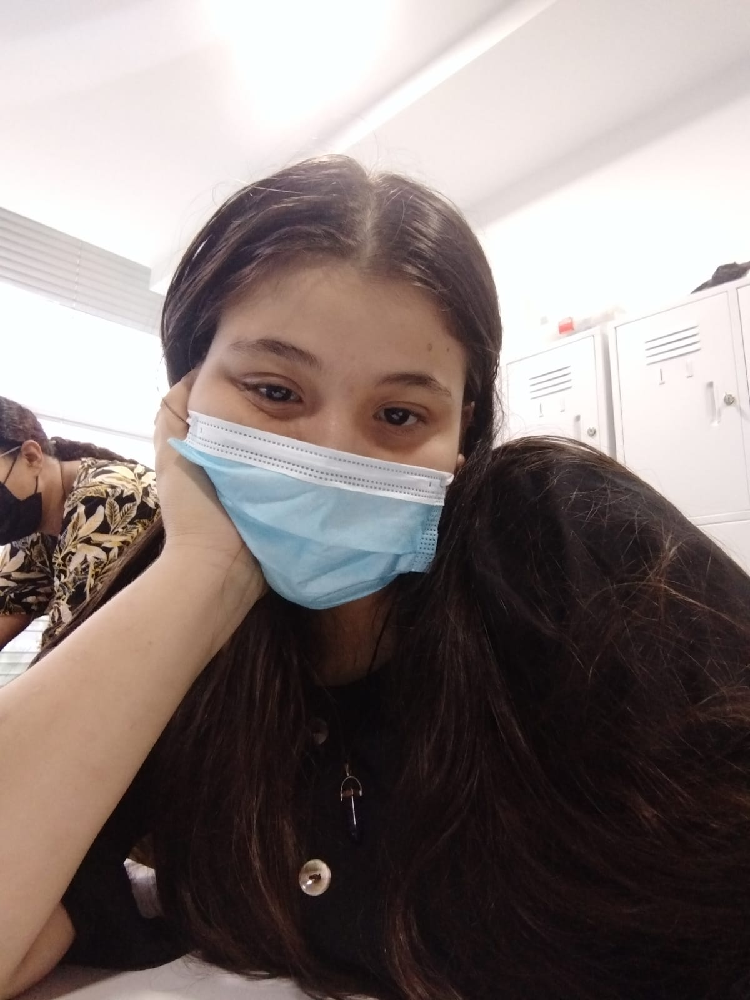
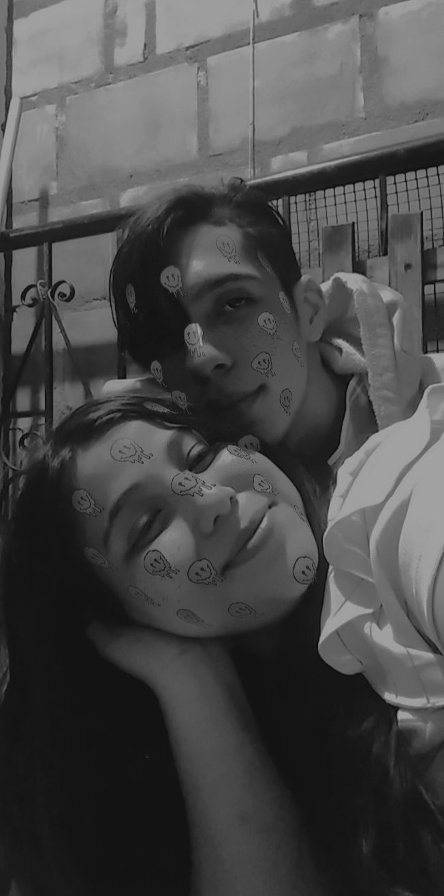

Recuerdo tu mirada como si no hubiera pasado tanto tiempo, ver como cruzamos nuestras miradas aunque yo allá pensado que me está mirando ella, quien diría que serías tu la persona que ahora amo con tanto amor, quien iba a saber que de una mujer tan bella y tan perfecta se escondía una gran herida en su corazón y te admiro por intentar solucionarlo es lindo ayudar a las personas, aunque no me hayas dicho por lo que pasabas sentí que debí ayudarte no quería ver como te destrozabas el corazón, aunque me daba miedo acercarme a ti por tímido vi como también te acercaste ami y buscabas conversación en mí fuiste mi luz y amo ver como actualmente eres como un angelito para mí una persona mimada, cariñosa y consentida, jamás dejaría ir esa niña que llevas dentro me dolía ver como en tus ojos se veía la tristeza te consumía ver eso me dolía no sé por qué tal vez por qué te dije que odio ver que lastimen a las personas, pero contigo era distinto siempre quería está ahí a tu lado apoyándote aunque al inicio fuera difícil para ti.
No me importaba si me tenía que trasnochar contigo, por eso empece a jugar todas las noches a tu lado, empece a sentir algo por ti, me decía yo mismo, esta chica me gusta? Si solo quería ayudarla, pero es que ella tiene algo que siempre soñé tener aunque estabas junto a alguien no quería que lo olvidaras, pero por más que lo intentaste el idiota solo te lastimo más aunque tal vez haga mal en mencionarlo me prometí curar tu corazón y hay fue cuando conocí todas las historias el solo ver tus ojos me decía la haré la chica más feliz, pero aún no sé lo diré solo espero que ella vea lo que siento hay fue cuando empece a estar más a tu lado a compartir pequeños momentos contigo, recuerdo nuestro primer beso nuestro primer compartir nuestra primera salida te amo tanto que nunca olvidaré la más mínima cosa que paso contigo así sean peleas, la primera vez que fui a tu casa hasta las 2:00 am fueron momentos lindos contigo, como empezaste a apegarte ami que ya ni me dejabas por un segundo fue lo más hermoso del mundo las llamadas contigo espectacular solo pienso en que esta chica es ¡¡INCREÍBLE!! El día que veías en cielo en llamada y yo decía que te entraras está haciendo frío y no te fuiste solo por hablar conmigo, no lo cuento todo por que sé que no hará falta, siempre fuiste lo que soñé, aunque pienses que te dejaré de amar, no sabes lo mucho que soñé tenerte a mi lado una chica atenta, perfecta que solo quiera recibir amor de mí, que sea como ella quería ser, me decías que amabas ser como una niña una persona que solo busca amor, por suerte llegue yo y jamás te dejaré por ti haré cosas que nadie haría.